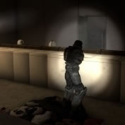

Reviews and news for gamers
Latest Reviews

The PS4 version of Diablo 3 may have offline co-op, no word on PC equivalent
In a video which has now been removed from YouTube (via the RPS forums), a Blizzard rep announced the addition of offline, shared-screen co-op to the PlayStation 4 port of Diablo 3. Whether this is strictly co-op, or will allow single-player offline as well, wasn’t specified, but it seems odd that offline play would be present and restricted to co-op. There’s no word on whether the feature will make it to PC, and Blizzard tells PC Gamer that it is not yet ready to share anything on the subject.